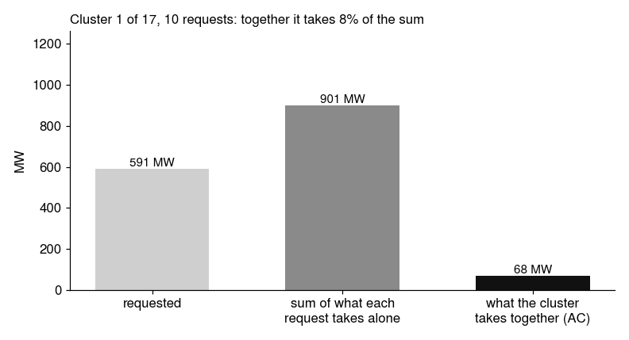
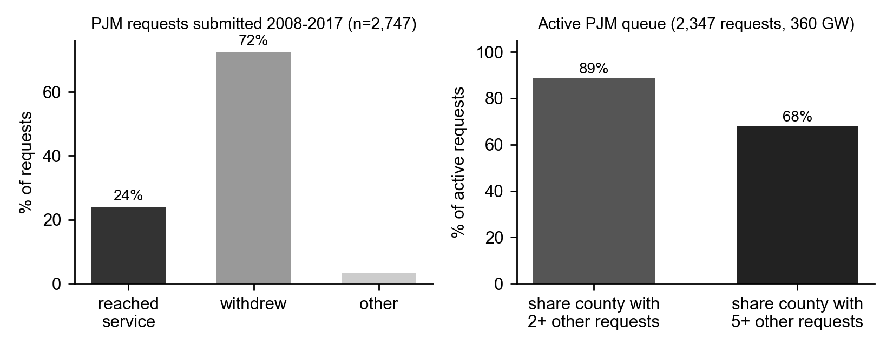
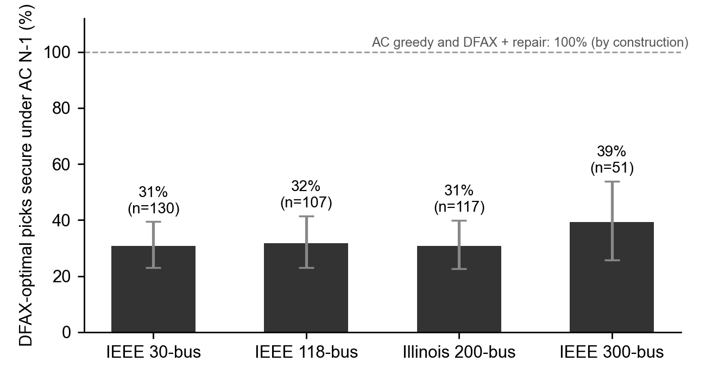

Deciding what connects to the grid, project by project and as a whole.
New solar farms, batteries and data centers wait years to connect, and most never do. Certified Interconnection is a study engine that tells each project, and the whole group asking at once, how much the grid can take under every outage and season the operator checks, what the fastest and cheapest way to make room is, and who should pay. Every fast answer comes with a guarantee, or it goes to the full engineering study.

The problem
Before anything connects, the grid operator has to check that the grid stays safe if any line fails, in every season, with every other project that's asking at the same time. That's the interconnection study, and today it takes years, done one phase at a time. Since FERC Order 2023, operators like PJM study requests in clusters, because projects that fit alone can overload the grid together.
From PJM's own public queue file, which we cleaned and published:

What it answers
Every answer either carries a guarantee (a bound on how often a "safe" call can be wrong, backed by a random audit) or is deferred to the full study. Physics stays exact; AI only predicts, ranks and searches.
The stack
Built to plug into what grid operators already run: Power Grid Model (LF Energy, run in production at Alliander) as the solver, and grid foundation models such as IBM and Hydro-Québec's OpenGridFM as fast predictors that the guarantee layer checks.
Results so far
Clusters are worth less than the sum of their parts

When does today's shortcut hold?
PJM's published optimization picks the most MW that needs no upgrades using a linear model (distribution factors), then checks with full AC power flow. We checked those picks against AC N-1 ourselves:
| Setting | Linear pick secure under AC N-1 |
|---|---|
| Projects sized near each bus's limit (IEEE 30, 118, 300 and Illinois 200-bus) | 31% to 39% |
| Real PJM project sizes, synthetic 500-bus grid | 44 of 49 (90%) |
| Real PJM project sizes, synthetic 2,000-bus Texas grid | 16 of 20 (80%), admitting 220 of 1,669 MW requested |
So the shortcut is fine when a cluster is light and fails when it pushes the grid hard, and even when it's safe it leaves most of the requested MW unanswered. That's why the engine compares options instead of trusting one method.

Trusting AI answers
On IBM and Hydro-Québec's GENCO grid foundation model (synthetic Texas 2,000-bus, 989 outage cases), our check certified 609 answers and passed no wrong one, and using the model's prediction as a starting point made the exact solve about twice as fast (median 2 Newton iterations instead of 4).
Honest limits: results are on public synthetic grids, because real utility network models are restricted (CEII). The learned certified screen does not yet beat simple scaling of the linear answer. Seasons, multiple-outage categories, switching and cost sharing are being built now.
Code
Every generation request in PJM's public queue, cleaned, with the completion, withdrawal and crowding statistics above.
Physics core on Power Grid Model: seasonal cases, NERC contingency sets, batch outages, short circuit.
Learned AC corrections, the cluster selection reproduction, and the certify-or-defer guarantee.
Individual vs cluster value, which projects help or crowd each other, fair cost shares and withdrawal sensitivity.
IEEE 118-bus validation case contributed to Power Grid Model, plus warm-start benchmarks on #1609.
Roadmap
- Physics core: seasons, single, breaker and common-tower outages, short circuit and grid strength on Power Grid Model.
- Individual and cluster values on the 2,000-bus grid with real PJM project sizes.
- Ways to make room: network switching, flexible load and storage, connection order, and the MW each unlocks.
- Cost and time: public PJM upgrade costs and LBNL timelines; ranking by speed, cost and buildability.
- Guarantees everywhere: certificates that hold for the clusters the optimizer picks, plus a random audit.
- Fair cost sharing that survives withdrawals without a full restudy.
- Risk: double outages and a cascading screen.
- Product: a package and web demo where a queue file goes in and a report comes out, reviewed by planning engineers.
- Real networks through a utility or ISO partner, for a full, published validation.
Team
Sehaj Randhir Singh, lead researcher and developer, Queens High School for the Sciences at York College, New York. sehajr-singhs.github.io
Built with Claude (Anthropic) as an AI coding collaborator: code, experiments and documentation, with every result checked and reproducible from the repositories.